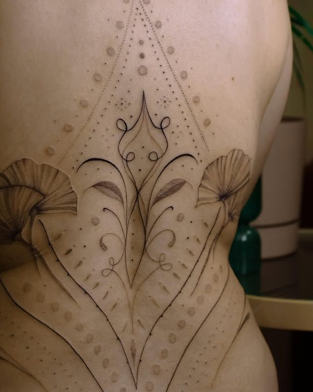

Un tatuaje es una inversión para toda la vida, y los cuidados que apliques durante las primeras semanas determinan en gran medida cómo quedará con el paso del tiempo. Una cicatrización correcta garantiza colores vivos, líneas definidas y una piel sana. Por eso, en ETIA TATTOO siempre proporcionamos instrucciones de cuidado personalizadas al finalizar cada sesión, adaptadas al estilo del tatuaje, la zona del cuerpo y el tipo de piel de cada cliente.
Las Primeras Horas Tras el Tatuaje
Al terminar la sesión, tu artista cubrirá el tatuaje con un apósito protector. Es fundamental mantener ese vendaje puesto entre 2 y 4 horas, protegiéndolo del roce, la suciedad y las bacterias del entorno. Cuando llegue el momento de retirarlo, hazlo con cuidado: moja ligeramente el apósito si está adherido a la piel para que no arranques el film junto con la tinta.
Una vez retirado el apósito, lava el tatuaje suavemente con agua tibia y jabón antibacteriano de pH neutro. Usa las yemas de los dedos con movimientos circulares muy suaves, sin frotar. El objetivo es eliminar los restos de plasma, tinta sobrante y cualquier impureza sin irritar la zona. Seca con toques suaves usando papel de cocina limpio. Nunca utilices una toalla de tela: puede acumular bacterias y fibras que se adhieren a la herida.
Limpieza Diaria
Durante las primeras 2 o 3 semanas, lava el tatuaje entre 2 y 3 veces al día con jabón de pH neutro. Mantén siempre el mismo procedimiento: agua tibia, movimientos suaves, sin frotar, y seca en seco con papel absorbente limpio. La constancia en la limpieza previene infecciones y ayuda a que la piel exfolie de forma natural y uniforme.
Evita remojar el tatuaje en agua estancada o dejar que el chorro de la ducha caiga directamente sobre él con mucha presión. Las duchas rápidas son perfectamente válidas, pero mantén el tatuaje alejado del chorro directo el mayor tiempo posible. La exposición prolongada al agua en esta fase debilita la costra superficial y puede alterar la fijación de la tinta.
Hidratación y Crema
La hidratación es clave para una cicatrización suave y sin complicaciones. Aplica una capa fina de crema específica para tatuajes o una loción hidratante sin fragancia después de cada lavado. La capa debe ser ligera, lo justo para que la piel quede mate y flexible, sin brillos exagerados que indiquen exceso de producto.
Evita los productos con vaselina o derivados del petróleo. Aunque se han usado durante años, obstruyen los poros e impiden que la piel respire correctamente durante la cicatrización. Opta por cremas de origen vegetal, formuladas sin alcohol, sin perfume y sin colorantes. Aplica 2 o 3 veces al día después de cada limpieza y no más: el exceso de crema crea un ambiente húmedo que favorece la aparición de bacterias.
Protección Solar
El sol es el mayor enemigo de la longevidad de un tatuaje. Los rayos UV degradan los pigmentos de la tinta y aceleran el envejecimiento del diseño. Durante las primeras 2 o 3 semanas, mientras el tatuaje está cicatrizando, evita completamente la exposición solar directa en esa zona. La piel está especialmente sensible y vulnerable, y el sol puede causar quemaduras que dañen el resultado final de forma irreversible.
Una vez que el tatuaje haya cicatrizado por completo, protégelo siempre con un protector solar de SPF 50 o superior antes de salir al exterior. Esto es válido para toda la vida del tatuaje: hacer del protector solar un hábito diario en la zona tatuada marcará la diferencia entre un tatuaje que mantiene sus colores durante décadas y uno que se desvanece prematuramente.
Ropa Adecuada
Durante el proceso de cicatrización, la elección de la ropa que cubre el tatuaje importa más de lo que parece. Opta siempre por prendas holgadas de algodón o materiales transpirables que no rocen con la zona. La fricción constante puede irritar la piel, arrancar costra y afectar la fijación de la tinta, especialmente en zonas de movimiento como el codo o la corva.
Evita las telas sintéticas y ajustadas que no permiten la respiración de la piel. Si el tatuaje queda en una zona que inevitablemente estará en contacto con la ropa, asegúrate de que la tela no se pegue. Si notas que la prenda se adhiere, mójala suavemente con agua antes de retirarla para no dañar la zona.
Piscinas, Playa y Baños
Durante las primeras 2 o 3 semanas de cicatrización, evita sumergir el tatuaje en cualquier tipo de agua estancada: piscinas, playas, jacuzzis, bañeras o lagos. El cloro de las piscinas irrita la piel herida y puede decolorar la tinta de forma desigual. El agua del mar, aunque tenga propiedades naturales, también contiene bacterias y sal que interfieren con el proceso de curación.
Las duchas rápidas son perfectamente válidas, pero recuerda no dejar el chorro caer directamente sobre el tatuaje de forma prolongada. Una vez transcurrido el periodo de cicatrización y confirmado que la piel ha recuperado su integridad, podrás volver a bañarte con total normalidad, siempre aplicando protector solar antes de exponerte al sol en exterior.
Señales de Alerta
Es completamente normal que en los primeros días el tatuaje muestre cierto enrojecimiento, leve hinchazón, descamación y picazón. Estas son respuestas naturales del organismo ante una herida y forman parte del proceso de cicatrización. La descamación, en particular, puede alarmar a quienes se tatúan por primera vez: es normal que la piel se pele como si fuese una quemadura solar leve. No la arranques.
Sin embargo, hay señales que requieren atención médica: enrojecimiento intenso que se extiende más allá de la zona tatuada, secreción de pus de color amarillo o verde, fiebre, o dolor persistente que no remite pasadas las 48 horas. Si observas alguno de estos síntomas, consulta a un médico sin demora. En ETIA TATTOO estamos disponibles para responder cualquier duda que tengas sobre el proceso de cicatrización de tu tatuaje.
¿Cuánto Tarda en Cicatrizar un Tatuaje?
La cicatrización de un tatuaje ocurre en dos fases diferenciadas. La cicatrización superficial, en la que la piel se pela y forma una nueva capa exterior, suele completarse en 2 o 3 semanas. Durante este tiempo verás la descamación y el tatuaje puede parecer apagado o con aspecto lechoso: es perfectamente normal y la tinta recuperará su intensidad una vez terminada esta fase.
La cicatrización profunda, en la que las capas más internas de la dermis se regeneran completamente, puede tardar entre 4 y 6 semanas. Este plazo varía según el tamaño del tatuaje, la zona del cuerpo y el tipo de piel de cada persona. Las zonas de alta movilidad como las articulaciones, el cuello o los pies suelen tardar más. Las piezas grandes con mucha cobertura de tinta también requieren más tiempo. Sé paciente y cuida el proceso.
Si tienes dudas sobre el cuidado de tu tatuaje, no dudes en contactarnos. Descubre todos nuestros estilos de tatuaje y encuentra el diseño que mejor se adapta a ti.